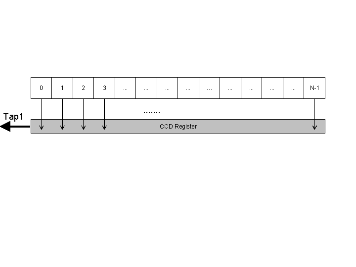
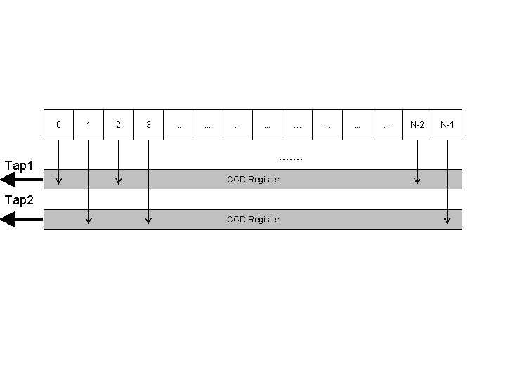
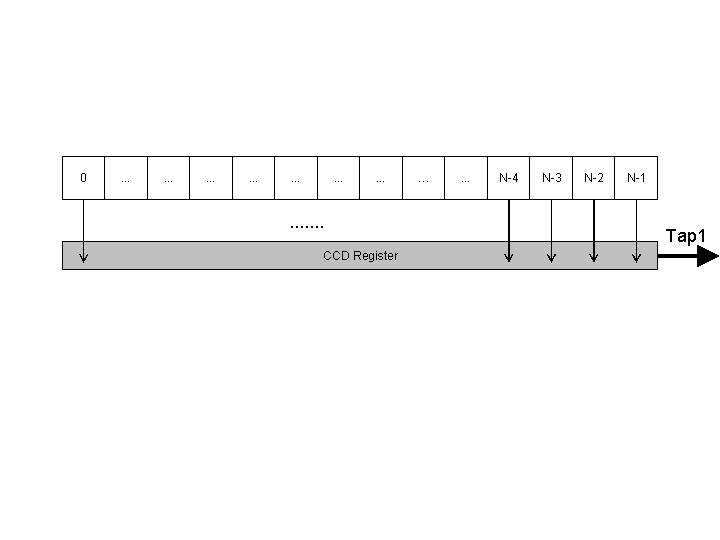
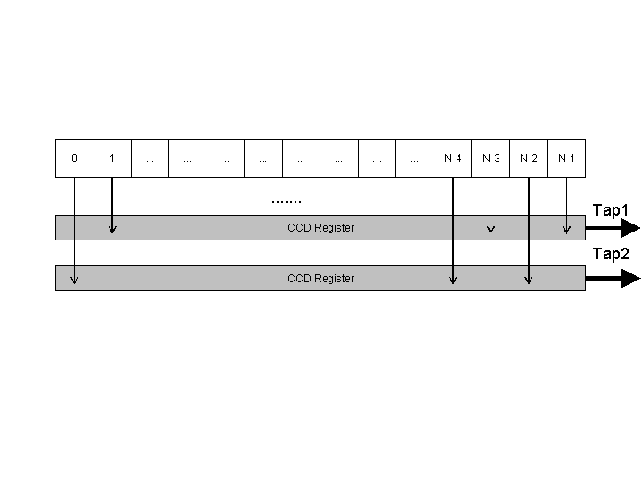
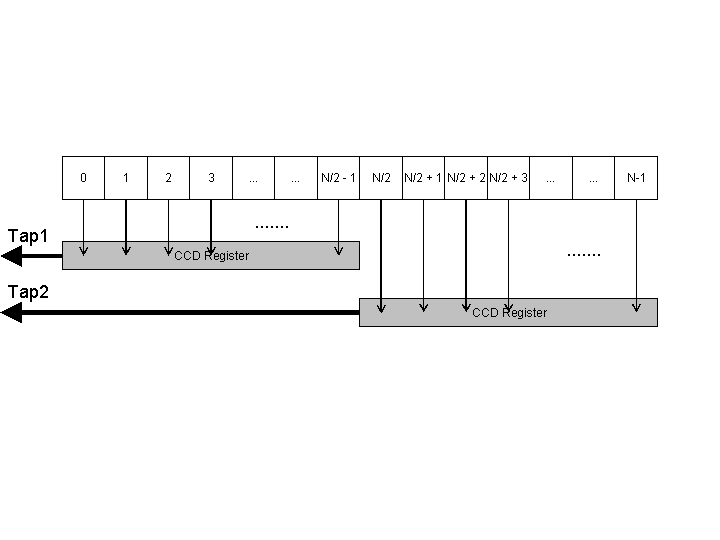
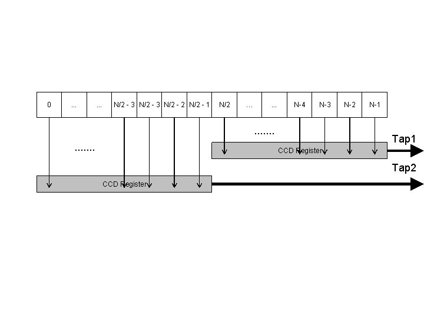
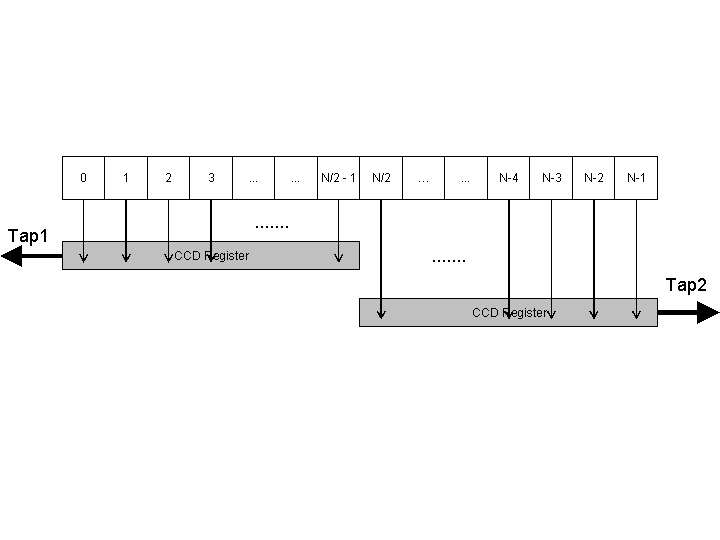

Sensor Readout Correction
(for Base CameraLink)
Parameter Set
Description
Most camera sensors are read out sequentially in the so called raster scan format (line by line from top-left to bottom-right) .However, to speed up the data transfer, some sensors can be configured to read out several pixels in parallel. As a result, pixels transferred succeeding over the CamerLink cable are not necessarily neighbouring pixels. The Sensor Readout Correction can reshuffle the pixels on-board of the frame grabber and transfer the grabbed image in the usual raster-scan fashion. All common readout strategies are supported to save computational power of the host system.
Parameters
Readout Mode
The parameter Readout Mode selects the pixel reshuffeling scheme:
| Sensor Mode | Function | Mode No. | |
| SMODE_UNCHANGED |
->
|
0 | |
| SMODE_REVERSE |
<-
|
3 | |
| SMODE_TAB2_0 |
1>
|
2>
|
1 |
| SMODE_TAB2_1 |
<2
|
<1
|
4 |
| SMODE_TAB2_2 |
1>
|
<2
|
6 |
The SMODE_UNCHANGED mode is mode 0. The pixels are read out forward pixel for pixel and row for row. Here you can see the scheme for single tap.

The SMODE_UNCHANGED mode exists also for dual tap. The pixel readout procedure is devided by two taps. Readout direction is forward.

The SMODE_REVERSE mode is mode 3. The pixels are read out backwards pixel for pixel and row for row. Here you can see the scheme for single tap.

The SMODE_REVERSE mode exists also for dual tap. The pixel readout procedure is devided by two taps. Readout direction is backward.

Mode 1 is the SMODE_TAB2_0. Half the line will be read out forward in parallel. This schema is a dual tap mode.

The SMODE_TAB2_1 which is mode 4 reads out the half the line backward in parallel for dual tap cameras.

Mode no. 6 / SMODE_TAB2_2 reads out half the line forward and half the line backward in parallel. Dual tap cameras are supported.

References
| Forward |